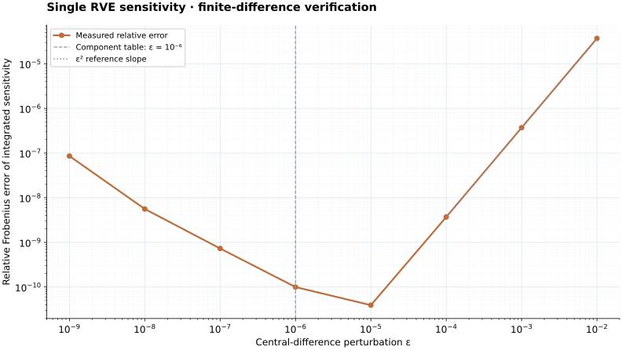

\[-\operatorname{Div}\mathbf P(\mathbf F_M+\nabla\mathbf w)=\mathbf0.\]
Single RVE / Linear VEM
Periodic RVE with first-order polygonal VEM
The same periodic micro problem discretized with polygonal projection and stabilization.
\[\mathbf u^+-\mathbf u^-=(\mathbf F_M-\mathbf I)(\mathbf X^+-\mathbf X^-).\]
\[G_E=G_E^{cons}(\Pi\mathbf u,\Pi\delta\mathbf u)+S_E((I-\Pi)\mathbf u,(I-\Pi)\delta\mathbf u).\]
| Mathematical quantity | Meaning | Code identifier | Source function |
|---|---|---|---|
| \(\Pi\mathbf u\) | Linear VEM projection | projection | weak_scalar_vem |
| \(S_E\) | Stabilization | stabilization | weak_scalar_vem |
| \(\boldsymbol\lambda\) | PBC multipliers | lambda | solve_rve_periodic_problem |
Build and run
cp -R RVEtest/input RVEtest/input.bak
cp Web/examples/single-rve-vem/input/*.txt RVEtest/input/
make -C RVEtest MODEL_SRC=../Web/examples/single-rve-vem/weak_form.cpp USE_VEM=1 runSensitivity verification / VEM k=1
Finite-difference agreement across perturbation sizes.
Measured on this downloadable elastic RVE at \(\bar{\mathbf F}=\begin{bmatrix}1.015&0.02\\0.005&1.01\end{bmatrix}\). Each of the 64 perturbed problems is solved independently, plus one base solve. UMFPACK is used with RVE tolerance \(10^{-12}\); adaptive micro substepping is off.
Re-equilibrate the RVE at every perturbation.
\[\mathbf I_P(\bar{\mathbf F})=\int_{\Omega_\mu^0}\mathbf P_\mu\,dV,\qquad C_{iAjB}=\frac{d I_{P,iA}}{d\bar F_{jB}}.\]
\[C^{\mathrm{FD}}_{iAjB}(\varepsilon)=\frac{I_{P,iA}(\bar{\mathbf F}+\varepsilon\mathbf E^{jB})-I_{P,iA}(\bar{\mathbf F}-\varepsilon\mathbf E^{jB})}{2\varepsilon},\qquad e_{\mathrm{rel}}=\frac{\|\mathbf C-\mathbf C^{\mathrm{FD}}\|_F}{\|\mathbf C^{\mathrm{FD}}\|_F}.\]
Both sides use the integrated Piola convention of result.sensitivity.C. All 9 stress entries and 4 in-plane deformation-gradient directions enter the error norm. Dividing both sensitivities by the same fixed reference volume gives the averaged-stress tangent comparison.

Component comparison
In-plane components at \(\varepsilon=10^{-6}\).
Each row compares the implemented integrated sensitivity with the independently re-equilibrated central difference. Absolute errors remain meaningful for zero and near-zero components.
| Stress | Perturbation | Sensitivity | Central difference | Absolute error |
|---|---|---|---|---|
| P11 | F11 | 1.46564434501e+02 | 1.46564434486e+02 | 1.462e-08 |
| P11 | F12 | 8.04303361620e-01 | 8.04303362800e-01 | 1.181e-09 |
| P11 | F21 | -1.48200033560e-01 | -1.48200034245e-01 | 6.848e-10 |
| P11 | F22 | 4.45545124782e+01 | 4.45545124725e+01 | 5.656e-09 |
| P12 | F11 | 8.04303361619e-01 | 8.04303361190e-01 | 4.291e-10 |
| P12 | F12 | 3.40135081134e+01 | 3.40135081134e+01 | 8.286e-11 |
| P12 | F21 | 3.16716942312e+01 | 3.16716942321e+01 | 8.784e-10 |
| P12 | F22 | 1.54673142056e+00 | 1.54673142072e+00 | 1.612e-10 |
| P21 | F11 | -1.48200033560e-01 | -1.48200034022e-01 | 4.623e-10 |
| P21 | F12 | 3.16716942312e+01 | 3.16716942310e+01 | 2.880e-10 |
| P21 | F21 | 3.41657905440e+01 | 3.41657905449e+01 | 9.234e-10 |
| P21 | F22 | -3.18329465260e-01 | -3.18329465065e-01 | 1.946e-10 |
| P22 | F11 | 4.45545124782e+01 | 4.45545124741e+01 | 4.102e-09 |
| P22 | F12 | 1.54673142056e+00 | 1.54673142472e+00 | 4.157e-09 |
| P22 | F21 | -3.18329465259e-01 | -3.18329461679e-01 | 3.580e-09 |
| P22 | F22 | 1.47321947501e+02 | 1.47321947487e+02 | 1.477e-08 |
Additional plane-strain stress components (20 entries)
| Stress | Perturbation | Sensitivity | Central difference | Absolute error |
|---|---|---|---|---|
| P13 | F11 | 0.00000000000e+00 | 0.00000000000e+00 | 0.000e+00 |
| P13 | F12 | 0.00000000000e+00 | 0.00000000000e+00 | 0.000e+00 |
| P13 | F21 | 0.00000000000e+00 | 0.00000000000e+00 | 0.000e+00 |
| P13 | F22 | 0.00000000000e+00 | 0.00000000000e+00 | 0.000e+00 |
| P23 | F11 | 0.00000000000e+00 | 0.00000000000e+00 | 0.000e+00 |
| P23 | F12 | 0.00000000000e+00 | 0.00000000000e+00 | 0.000e+00 |
| P23 | F21 | 0.00000000000e+00 | 0.00000000000e+00 | 0.000e+00 |
| P23 | F22 | 0.00000000000e+00 | 0.00000000000e+00 | 0.000e+00 |
| P31 | F11 | 0.00000000000e+00 | 0.00000000000e+00 | 0.000e+00 |
| P31 | F12 | 0.00000000000e+00 | 0.00000000000e+00 | 0.000e+00 |
| P31 | F21 | 0.00000000000e+00 | 0.00000000000e+00 | 0.000e+00 |
| P31 | F22 | 0.00000000000e+00 | 0.00000000000e+00 | 0.000e+00 |
| P32 | F11 | 0.00000000000e+00 | 0.00000000000e+00 | 0.000e+00 |
| P32 | F12 | 0.00000000000e+00 | 0.00000000000e+00 | 0.000e+00 |
| P32 | F21 | 0.00000000000e+00 | 0.00000000000e+00 | 0.000e+00 |
| P32 | F22 | 0.00000000000e+00 | 0.00000000000e+00 | 0.000e+00 |
| P33 | F11 | 5.85285326381e+01 | 5.85285326324e+01 | 5.631e-09 |
| P33 | F12 | 8.47947655772e-01 | 8.47947657645e-01 | 1.873e-09 |
| P33 | F21 | -2.47792246385e-02 | -2.47792242281e-02 | 4.104e-10 |
| P33 | F22 | 5.87110354264e+01 | 5.87110354210e+01 | 5.434e-09 |
Full measurement record (JSON) · All components and perturbations (CSV) · Graph (SVG) · Graph (PNG)


The measured discrepancies are finite numerical errors. This check verifies the homogenized integrated-stress tangent at the stated deformation; it does not measure spatial-discretization error or independently test each intermediate sensitivity.